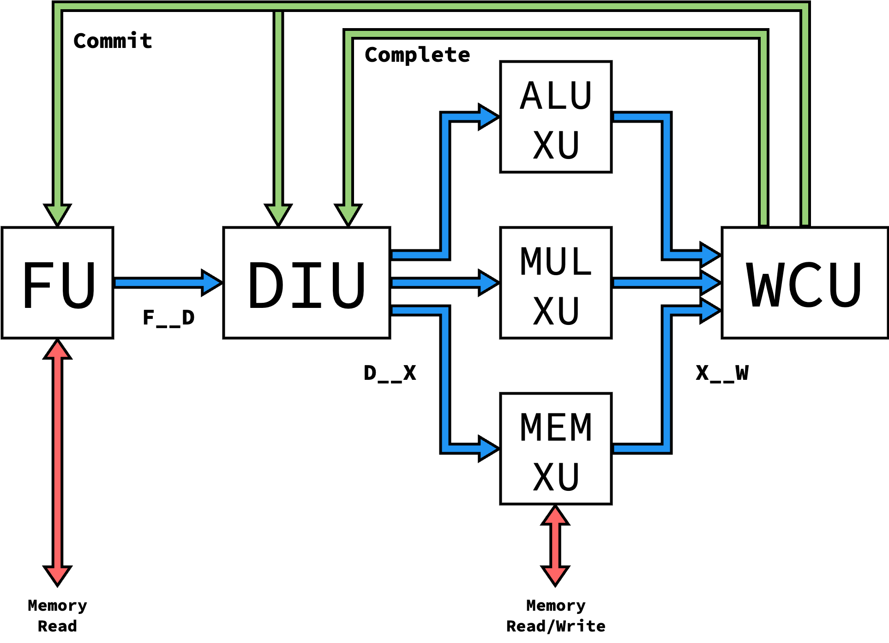
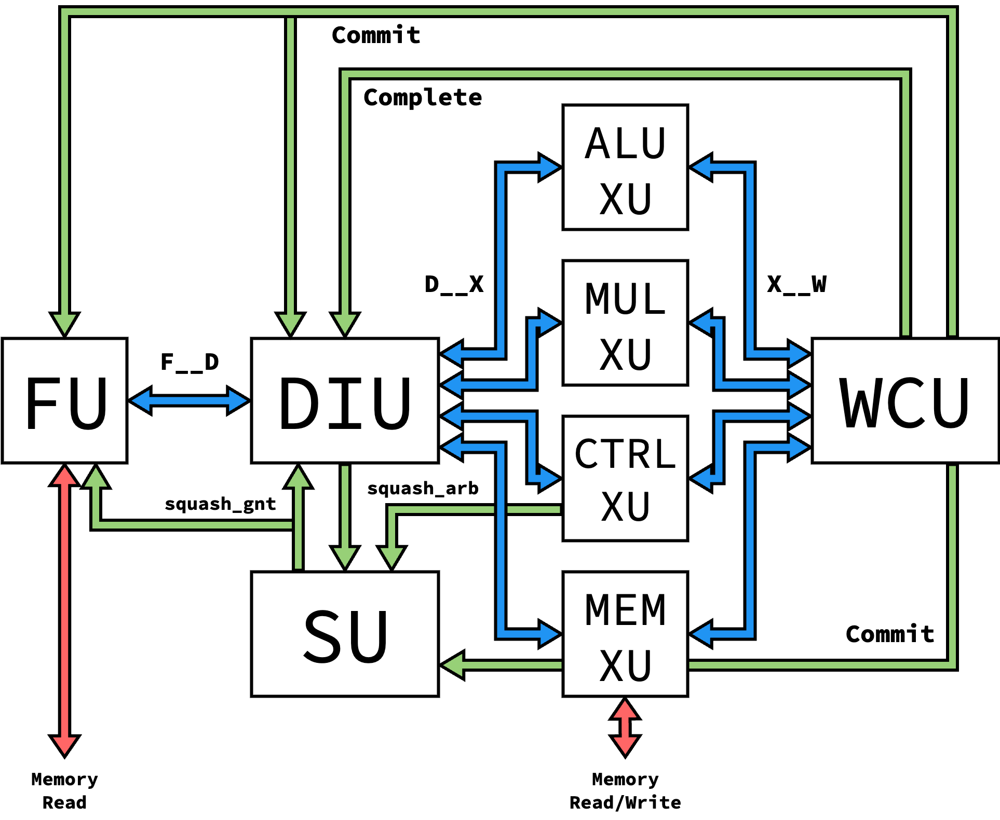

Processor Versions
Blimp takes an iterative design approach, enabled through its modularity. Different levels of Blimp’s microarchitectural units can be composed to form different versions of Blimp processors. This enables the design of these components to occur iteratively, adding on functionality as the complexity of the processor progressed.
Currently, 1 version of the processor is implemented. The table below details the level of each unit that each processor version supports:
Instruction Routing/Arbitration
While specific levels of execute units may be supported at a given processor version, many levels aren’t used in the given implementation, given that they are superseced by later levels with greater support
Proc. Version |
FU Level |
DIU Level |
XU Levels |
WCU Level |
SU Level |
|---|---|---|---|---|---|
V1 |
1 |
1 |
1 |
1 |
|
V2 |
2 |
2 |
1, 2 |
2 |
|
V3 |
2 |
3 |
1, 2 |
3 |
|
V4 |
2 |
3 |
1, 2, 3 |
3 |
|
V5 |
3 |
4 |
1, 2, 3, 4 |
3 |
|
V6 |
3 |
5 |
1, 2, 3, 4, 5 |
3 |
1 |
V7 |
3 |
5 |
1, 2, 3, 4, 5, 6 |
3 |
1 |
V8 |
3 |
5 |
1, 2, 3, 4, 5, 6, 7 |
3 |
1 |
Version 1
The Version 1 processor is the simplest version, and aims to be the
baseline needed for assembly execution with modular units. Only three
instructions are supported (add, addi, and mul). The processor
is single-issue with in-order issue and completion, and assumes that
Execute Units are single-cycle to maintain instruction ordering.
{kind=link}
Instruction Routing/Arbitration
To prepare for out-of-order implementations, the Level 1 DIU dynamically routes instructions to XUs based on availability, and the Level 1 WCU implements Round-Robin arbitration to select which XU to receive an instruction from. However, this isn’t relevant based on the single-cycle guarantee of XUs, and could be replaced if needed for area.
Version 2
The Version 2 processor adds support for operations with variable latency by modifying the DIU and WCU to reorder committing instructions based on a sequence number, and to resolve WAW hazards through stalling in the DIU. The FU is also modified to attach sequence numbers to instructions when fetched. To demonstrate this, a pipelined multiply unit is used as an XU to have intructions with varying latency.
Sequence Number Generation
The number of sequence numbers is a parameter for the overall processor, and represents how many instructions can be in-flight at once. This can be a fairly small value, as the number of in-flight instructions is also currently limited by processor pipeline depth. However, if the FU gets to a point where isn’t doesn’t have any more sequence numbers, it will stall until a sequence number is released through the associated instruction committing, communicated on the commit interface

Version 3
The Version 3 processor is similar to the Version 2 processor, but introduces register renaming to resolve WAW hazards instead of stalling. This requires modifying the DIU to include a rename table, as well as the WCU to forward the physical register back to the DIU upon completion/commit. Because of the commit interface indicating when a physical register is freed, the DIU must now also listen to the commit interface.
Keeping track of the architectural register
Strictly-speaking, we no longer need to propagate the architectural register specifier down the pipeline, as only physical registers are used after the DIU. However, we still maintain this to support backwards compatibility along the interfaces, as well as to be able to produce an architecturally-correct instruction trace upon commit for verification.
{kind=link}
Version 4
The Version 4 processor adds support for memory operations, requiring an additional XU to communicate with a memory interface.
{kind=link}
Version 5
The Version 5 processor adds support for unconditional control flow
operations (i.e. jumps). This requires modifications to the DIU to
identify and act on jump instructions through the (newly-introduced)
squash interface, as well as modifications to the FU to redirect the
front of the pipeline and squash all in-flight fetches. We also need
an additional XU to propagate the jump instructions to commit, as well
as to store the return address when necessary (ex. JALR instructions).

Version 6
The Version 6 processor adds support for conditional control flow instructions. These instructions are detected and acted on in a new XU, which now interfaces with a squahs interface. Because control flow changes can now come from either an XU or the DIU, we also need a new Squash Unit (SU) to arbitrate between control flow changes based on sequence number. This also requires a new DIU to detect when it’s being squashed from an XU.
Instruction Routing/Arbitration
Currently, our processor requires that the control flow XU acts on control flow instructions in one cycle. This simplifies the design by not allowing mistakenly-speculated instructions to get past the DIU, but isn’t as modular as possible in design. An ideal implementation (discussed in Further Work) wouldn’t impose this limitation, but would additionally require all other XUs and the WCU to listen to and act on a squash interface.

Version 7
The Version 7 processor adds new XUs to support all TinyRV2 instructions, as specified in Cornell’s ECE 4750. This functionality is sufficient to run basic C code.
{kind=link}
Version 8
The Version 8 processor eadds new XUs to support the complete RV32IM ISA. This functionality is sufficient to run complex C/C++ applications, including games.